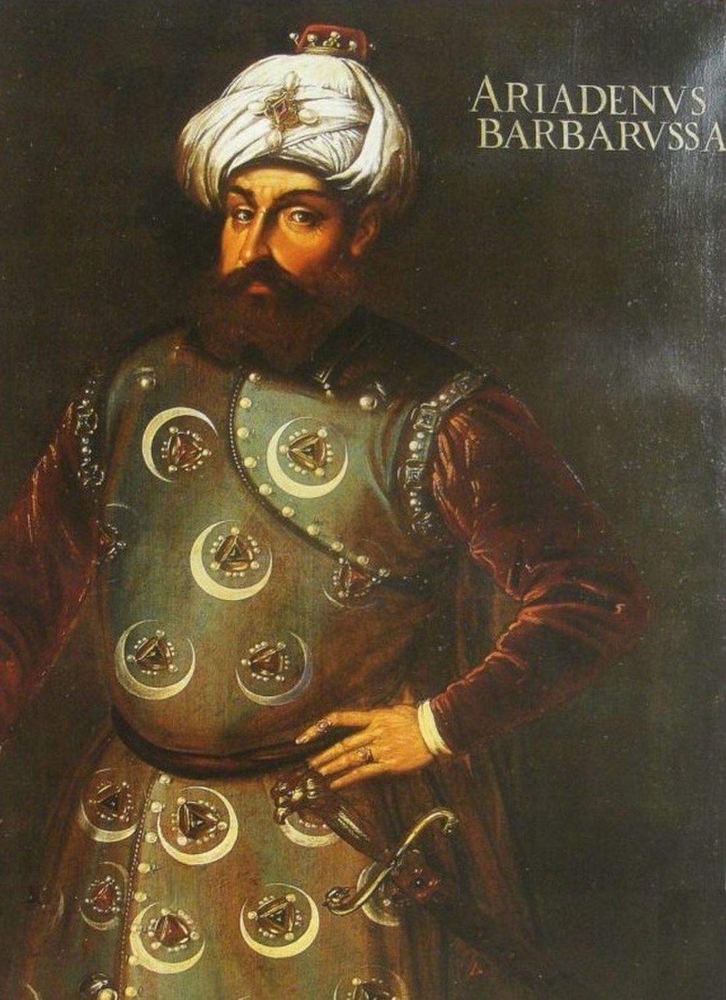
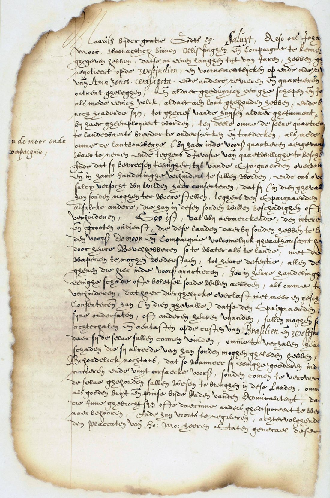
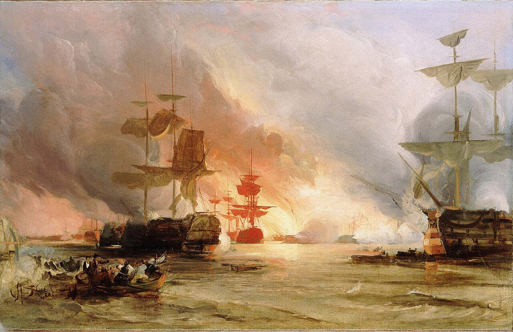

Art der Piraterie
In der Frühen Neuzeit war Seeraub oft staatlich gerahmt. Der Kaperbrief ermächtigte Privatkapitäne, im Krieg feindliche Handelsschiffe aufzubringen und Beute vor Prisengerichten zu teilen. Ohne gültigen Auftrag galt dasselbe Tun als Piraterie. Im Mittelmeer prägte das Korsarenwesen die Epoche: Von Algier, Tunis, Tripolis und Salé aus operierten muslimische Korsaren mit Galeeren, Fusten und später Segelschiffen; sie nahmen Schiffe, plünderten Küsten und erpressten Lösegelder sowie Tribute. Auf christlicher Seite antworteten unter anderem Johanniter/Malteser mit eigener Kaperpraxis. Wirtschaftlich zentral war die „Lösegeldökonomie“: Gefangene wurden versklavt oder freigekauft. Parallel blühte im Atlantik und in der Karibik das Freibeuter- und Piratenwesen (u. a. Bukaniere, später das Goldene Zeitalter ca. 1650–1730).
Hauptcharaktere


- Arudsch (Oruç) und Khair ad-Din Barbarossa: Korsarenbrüder; etablierten Algier als Machtbasis, Khair ad-Din wurde osmanischer Admiral (Kaptan-ı Derya).
- Turgut Reis, Murad Reis, Kılıç Ali Pascha: weitere führende Barbaresken-Korsaren.
- Europäische Renegaten (z. B. Zymen Danseker, John Ward): brachten Segel- und Artillerietechnik in die Korsarenflotten.
- Europäische Kaperfahrer / Freibeuter im Auftrag von Kronen (u. a. englische und französische Kapitäne mit letters of marque).
- Malteser / Johanniter: Ordensritter als Gegenkorsaren und zugleich selbst Aktive im Seekrieg.
- Politische Akteure am Ende der Ära: US-Navy in den Barbareskenkriegen; britisch-niederländische Flotte vor Algier 1816; Frankreich mit der Eroberung Algiers 1830.
Was geschah
Nach 1492 und mit der osmanischen Expansion wurde Nordafrika zum Zentrum organisierten Korsarentums. Die Barbarossa-Brüder eroberten Algier (ab 1516); Khair ad-Din band die Stadt an die Hohe Pforte. Das 16. und vor allem das 17. Jahrhundert gelten als Hochphase: Raubzüge bis in den Atlantik, Massengefangennahmen an europäischen Küsten, Tributverträge mit Seefahrernationen. Schätzungen sprechen von rund einer bis über einer Million europäischer Gefangener über die Jahrhunderte (Zahlen in der Forschung umstritten, die Größenordnung ist jedoch erheblich).
Europäische Mächte zahlten lange Schutzgelder oder führten begrenzte Strafexpeditionen. Die jungen USA führten die Barbareskenkriege (1801–1805, 1815). 1816 bombardierte ein britisch-niederländisches Geschwader Algier. Dennoch endete das System erst mit der französischen Besetzung Algiers 1830. Parallel dazu hatte im Atlantik die staatliche Freibeuterei und die offene Piraterie der Karibik ihre eigenen Höhepunkte und Niedergänge.
Wie begann es
Mehrere Faktoren kamen zusammen: Machtvakuum und Rivalität im westlichen Mittelmeer nach der Reconquista, osmanisch-spanische Konfrontation, lukrativer Seehandel und die alte Praxis, Seekrieg an Private auszulagern. Kaperbriefe machten Beutefahrt legal im Kriegsrecht. Für die Barbareskenstaaten wurde der corso zur Staatsfinanzierung: Anteil der Beute an Herrscher und Hafen, organisiert über Kapitänsräte (taifa al-raïs). Morisken und Renegaten verstärkten die Flotten personell und technisch.
Wie endete es

Militärische Übermacht dampfbetriebener und gut organisierter Marinen, Wegfall der Tributpolitik und koloniale Expansion beendeten das Barbaresken-System. Nach den Napoleonischen Kriegen wollten die Großmächte den Mittelmeerhandel dauerhaft sichern; 1830 zerstörte die Eroberung Algiers die letzte große Korsarenbasis. Formal wurde die Kaperei unter europäischen Mächten später durch die Pariser Seerechtsdeklaration 1856 geächtet. Offene Piraterie verschwand damit nicht weltweit, verlor aber im Mittelmeer ihre frühneuzeitliche Staatsform.
Quellen
- Wikipedia – Khair ad-Din Barbarossa: https://de.wikipedia.org/wiki/Khair_ad-Din_Barbarossa
- Wikipedia – Barbaresken-Korsaren: https://de.wikipedia.org/wiki/Barbaresken-Korsaren
- Wikipedia – Geschichte der Piraterie: https://de.wikipedia.org/wiki/Geschichte_der_Piraterie
- Wikipedia – Corsairs of Algiers: https://en.wikipedia.org/wiki/Corsairs_of_Algiers
- Deutsches Rechtswörterbuch – Kaperbrief: https://drw.hadw-bw.de/drw-cgi/zeige?index=lemmata&term=Kaperbrief
- Cambridge / Review of International Studies – Barbary Coast … piracy, privateering, and corsairing: Cambridge-Artikel
- Bildquellen: Wikimedia Commons – Barbarossa-Porträt; Willem van de Velde d. J., Schiff vs. Barbaresken-Korsaren (ca. 1685); Kaperbrief 1618 (Nationaal Archief); Bombardement Algier 1816.